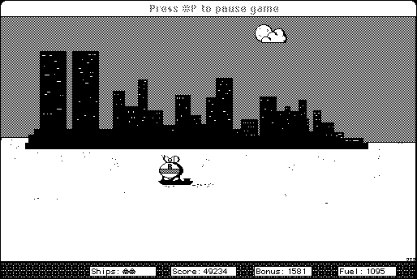

Download
lunar_phantom_1_0.zip (250K) Lunar Phantom 1.0 repackaged into a zipped hfs disk image and checksum file. The disk image can be mounted with Mini vMac.
lunar_phantom_1_0.sea (274K) Lunar Phantom 1.0 in the original format.
copyright: Rolf Staflin
mod date: Aug 18, 1995
license: shareware
official url :
Lunar Phantom
"I originally wanted to make a true 'Lunar Lander' style game, but it evolved into more of a arcade game."

If you find these downloads useful, please consider helping the Gryphel Project, which hosts them.
Here are the md5 checksums for the downloads, signed with Gryphel Key 5:
--------- GRY SIGNED TEXT --------- bfef558bf474aa0d5bb10bb379ea4e55 lunar_phantom_1_0.zip 6822f8970ceb8946bf5dbca4ff024db5 lunar_phantom_1_0.sea ------- BEGIN GRY SIGNATURE ------- Gry/4Xa8CFcUzxdN/OIjztWwCkOpHFiUpIfe/norft+tpMclDrvBTUAwM2Z6LDvh YNrvX61XENtTYkMdnIgR3JFb0uZdMQZtMDIBxquFir48pT3dcw5FYj0wDXq0KJDl frSc8UxJq6Oo9i60P1xn2VWnVTP+xC6WPCzoazFN3pBcDBqxgdwO3Ek9YCzJrXMc -------- END GRY SIGNATURE --------